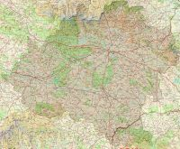

De: La Frikipedia, la enciclopedia extremadamente seria.
De: La Frikipedia, la enciclopedia extremadamente seria. De: La Frikipedia, la enciclopedia extremadamente seria.
.jpg/150px-muerto_3(2).jpg)
|
Muerto
El autor de este artículo, al parecer, se ha ido a una de sus citas al WC y suponemos que murió como el desdichado de aquí a la izquierda. Así que en su memoria, no seas cabrón, ponle más chorradas al artículo. |
| De la serie Países del planeta tierra: | |||||
| Tierra del Rock and Roll | |||||
|---|---|---|---|---|---|
| |||||
| Lema: Oro y Pxs | |||||
| Himno: Stairway To Heaven
| |||||
| 
| |||||
| Capital | Guitar City | ||||
| Mayor ciudad | Cannabisburgo | ||||
| Lenguas oficiales | Rocklero (Español con multiples tecnicismos de informáticos, frikis e historiadores) | ||||
| Gobierno | Democracia parlamentaria con olor a Cannabis Sativa | ||||
| Lord del Rock | Partido Colectivo | ||||
| Área | Los países Escandinavos y algo más.. | ||||
| Población | 20 Millones en total (15 Millones amantes del rock, 4.9 millones que desayunan, almuerzan y cenan con rock y un 0.1 millón pijo) | ||||
| Moneda | Money de pink floyd | ||||
| Zona horaria | La misma que en España | ||||
| Dominio Internet | .friki | ||||
| Código telefónico | 37454
| ||||
| Alianza permanente con Canada por Blizzard y Terrance y Philips y con Ozzy Osbourne en especial. | |||||
La Tierra del Rock and Roll, también conocida como "La Tierra del Roc and Rol" es la fuente principal del Rock (Roca) que todo el mundo escucha. Se ubica ahí, al norte de Europa, justo al lado de Jimy Hendrix
Pais fundado en 1945 d.F (después de Ford), por una horda de partisanos españoles compuesta por frikis, Rockeros Clásicos, jebis, clérigos de la Roligión y estudiosos del Derecho Masterial. Está situado en los antiguos reinos de Dinamarca, Finlandia, Islandia, Noruega y Suecia. El pais fue fundado, tras expulsar de allí a los nazis que lo ocupaban y a los canis. Tras arduas negociasiones, se anexionó la ciudad de Sachen Rachen, la cual se convirtió en su capital. Poco despues de eso, se establecieron como una sociedad ideal, pero con la aparicion de Elvis (Version gorda!), esta sociedad se corrompio, y sigue asi, con Jim Morrison, Buda (tenia un pasado Rockero tambien) y otros mas que no recuerdo pero se que existen.
Con la aparicion de pijos, este pais se pudrio mas de lo que estaba, pero según los profetas, como Jimmy Page y Jimmy Hendrix (es un Honor llamarse Jimmy) vendra un Garou y devorara a todos los Pijos que existen en ese pais, despues de eso, el Garou organizara un recital mas grande que Woodstock y el Ozzfest juntos, donde reviviran los astros del Rock y todos estaran drogados y disfrutando de ROCK!.
La profecía, para felicidad de los pijos, no se cumplió. Pero eso no les vino mal a los rockeros, dado que eso les dio una excusa para destruír todo y todos a su paso (Lo que les fue muy divertido =D). Desde ese momento, aquel día se conmemora como fecha patria: El Día en que Destrozamos Todo.
Está ubicado en lo que es conocido por los mortales como "Península ecandinava" (Suecia, Finlandia y esos países dónde todo el mundo es rubio de ojos celestes). La Tierra del Rock and Roll está rodeada de montañas, llamadas "Montañas acorde" (¡Que nombre tan acorde al país!) de cuyas minas extraen la roca (Rock) que exportan. La población se ubica entre las montañas, que los protegen del frío viento y permiten que los increíblemente grandes fuegos de los conciertos no se apaguen.
1 - Región del Rock n' Roll (Rock clasico):La región mas poblada de todas aquí tendrás que andar de fiesta diariamente los 7 días de la semana, las 4 semanas del mes, los 12 meses del año sin para sin parar y dirás ¿como c&%O lo haré? No se nadie dijo que ser Chuck Berry, Queen etc.
2 - Región del Grunge:Aqui habitan los Hippies que apestan a m$%#$a Grunge rockeros, esta región se caracteriza por que nadie repito NADIE!!!!!!!! se baña, se lava el pelo (su pelo es largo hasta el culo), les gusta llevar pantalones de Bagabundo y drogarse con todo pero es que con todo, y todo el mundo se droga hasta las drogas se drogan aquí, Grupos insignea: Alice in Chains y Soundgarden.

Su religión es politeísta, muchos dioses (Jimmy Hendrix y todos esos)<en total 180 dioses del rock>. Los llamados "Conciertos" son el culto a ellos, en los que se adora mediante recuerda a sus Santos con rituales como prender fuego una guitarra o tocarla detrás de la nuca, y mediante cánticos sagrados tales como "Satisfaction" o "Welcome to the jungle".
El estadio (Catedral) mayor se encuentra en la ciudad de Guitar City , y está equipado con un sistema de audio que, seguramente, los maestros necesitarían para que sus alumnos le pongan atención. La maravillosa arquitectura de este edificio se basa en un escenario cuadrado color negro, con una mega pantalla gigante detrás y muchas pero muchas tribunas (Si, así de simple. No necesitan grandes y complejas estructuras). La catedral cambia cada...Cada año de Padre Rocker. El actual es Mick Jagger.
A diferencia de lo que pasa en otras religiones, a los devotos de esta iglesia le encanta ir a misa y rara vez no van.
Autor(es):